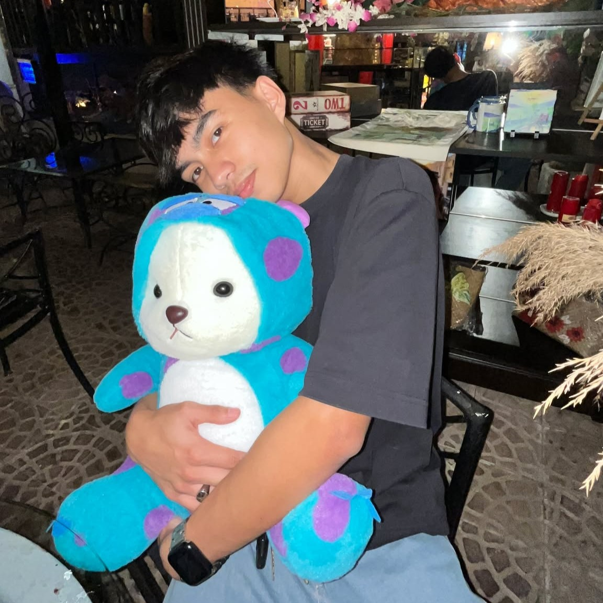

GT: JavaScript Basics 1
About De La Salle Lipa
Established in 1962, De La Salle Lipa (DLSL) is a private Catholic Lasallian institution located in Lipa City, Batangas, Philippines. Guided by the motto Crescit Gratia Virtuteque ("He grew in grace and wisdom"), DLSL offers a continuum of education from pre-elementary to graduate studies. The institution is committed to nurturing minds, touching hearts, and transforming lives through quality education and community engagement.
Spanning a 10-hectare urban campus, DLSL boasts state-of-the-art facilities, including the SENTRUM multi-purpose complex, modern academic buildings, and dedicated spaces for student organizations. In 1997, DLSL became one of the first educational institutions in Batangas to establish an online presence, reflecting its commitment to innovation and accessibility.
DLSL is a proud member of the global Lasallian network and maintains affiliations with organizations such as the Association for the Advancement of Sustainability in Higher Education (AASHE). In 2021, DLSL made history by becoming the first academic institution in the Philippines to receive the STARS Silver Rating from AASHE, recognizing its comprehensive sustainability initiatives.
Sorting Section
My Profile
Jhon Paulo H. Tenorio
BSIT Student
Advertisement